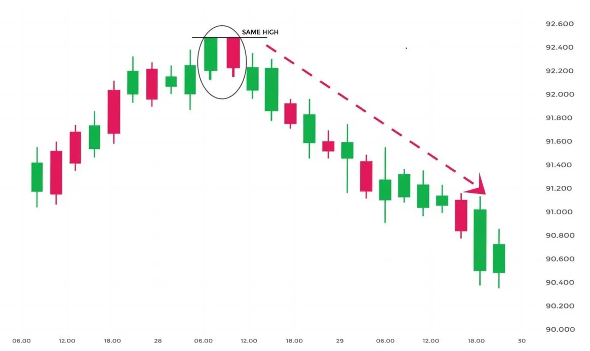

The Tweezer Top pattern is a bearish reversal candlestick pattern that is formed at the end of an uptrend.
It consists of two candlesticks, the first one is bullish and the second one is the bearish candlestick.
Both the tweezer candlestick make almost the same high.
| What does Tweezer Top Candlestick Pattern tell us? |
When the Tweezer Top candlestick pattern is formed the prior trend is an uptrend.
A bullish candlestick is formed which looks like the continuation of the ongoing uptrend.
On the next day, the high of the second day’s bearish candle’s high indicates a resistance level.
Bulls seem to raise the price upward, but now they are not willing to buy at higher prices.
The top-most candles with almost the same high indicate the strength of the resistance and also signal that the uptrend may get reversed to form a downtrend.
This bearish reversal is confirmed on the next day when the bearish candle is formed.
| Importance of this pattern: |
When the traders see the formation of tweezer top and bottom candlestick patterns on the charts, they should get cautious that a reversal is going to place.
They should square off their position when this reversal pattern forms.
They should also confirm the formation of the tweezer candlestick pattern with other technical indicators.
| Key Takeaways: |
